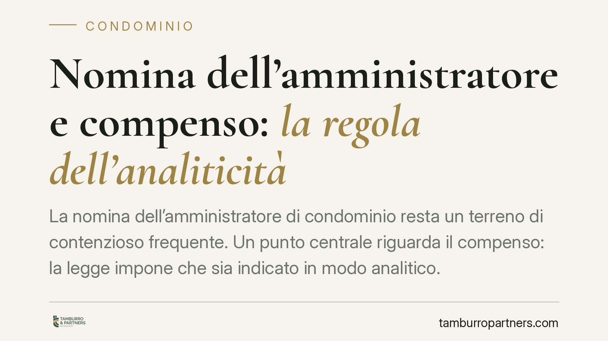

Nomina dell'amministratore e compenso: la regola dell'analiticità
La nomina dell'amministratore di condominio resta un terreno di contenzioso frequente. Un punto centrale riguarda il compenso: la legge impone che sia indicato in modo analitico. Vediamo cosa significa in concreto, quali effetti produce un'indicazione generica e come deve comportarsi l'assemblea quando vi sono più candidati e la maggioranza è già raggiunta.

Il quadro normativo
La riforma del condominio (legge 11 dicembre 2012, n. 220) ha inciso in modo significativo sui rapporti tra assemblea e amministratore. Tra le novità più rilevanti figura l'art. 1129, comma 14, del Codice civile, secondo cui l'amministratore, all'atto dell'accettazione della nomina e del suo rinnovo, deve specificare analiticamente, "a pena di nullità della nomina", l'importo dovuto a titolo di compenso.
La ratio è la trasparenza preventiva: i condòmini devono sapere, prima di votare, quanto costerà l'amministratore e per quali attività. Un compenso indicato in modo cumulativo o generico non soddisfa il requisito di analiticità.
Compenso ordinario e straordinario
L'analiticità richiesta dalla norma impone di distinguere il compenso per la gestione ordinaria da quello per le attività straordinarie. Non basta un importo unico forfettario: vanno enucleate, quantomeno nelle loro voci principali, le prestazioni remunerate e gli eventuali costi aggiuntivi (ad esempio per la gestione di appalti, contenziosi o pratiche fiscali). Diversamente, il preventivo rischia di non consentire all'assemblea una scelta informata.
Nella prassi, l'invio ai condòmini di un preventivo dettagliato prima dell'assemblea, poi richiamato e approvato in delibera, è lo strumento che più agevolmente assolve l'onere di specificazione.
Nullità della nomina: attenzione al regime di impugnazione
Un aspetto delicato riguarda gli effetti del difetto di analiticità. La norma parla di "nullità della nomina", ma la giurisprudenza non è uniforme nel qualificare la sorte della delibera che nomina l'amministratore senza un compenso analitico: una parte la considera nulla, altra la ritiene annullabile. La distinzione non è teorica, perché incide sui tempi e sui modi per contestarla.
Le delibere nulle possono essere impugnate senza limiti temporali; quelle annullabili devono invece essere impugnate, ai sensi dell'art. 1137 del Codice civile, entro trenta giorni (termine che decorre dalla deliberazione per i condòmini presenti dissenzienti o astenuti, e dalla comunicazione del verbale per gli assenti). Trattandosi di un profilo controverso, è prudente non dare per scontato quale regime si applichi al caso concreto.
Più candidati: l'apertura delle offerte concorrenti
Un secondo tema procedurale riguarda l'ipotesi in cui all'assemblea pervengano più candidature. Secondo un orientamento diffuso, una volta che una proposta ha raggiunto la maggioranza richiesta per la nomina, l'assemblea non è tenuta ad aprire ed esaminare le offerte degli altri candidati. La votazione, infatti, non equivale a una gara d'appalto vincolata al confronto economico tra tutte le offerte.
Resta fermo, però, il limite della correttezza dei lavori assembleari: le candidature regolarmente presentate devono essere portate a conoscenza dei presenti e poste in votazione secondo l'ordine del giorno, senza esclusioni arbitrarie. L'assemblea sceglie, ma deve farlo in modo trasparente e ordinato.
Implicazioni pratiche
Per l'amministratore, l'indicazione generica del compenso espone la nomina a contestazione. Per i condòmini, un preventivo poco chiaro è un elemento di vulnerabilità della delibera. Per entrambi, la gestione corretta dell'ordine del giorno in presenza di più candidati riduce il rischio di impugnazioni.
Cosa fare in concreto
- Pretendete un preventivo analitico. Verificate che distingua compenso ordinario e straordinario e che elenchi le voci di costo aggiuntive.
- Allegate il preventivo al verbale. La delibera deve richiamare espressamente il documento approvato, così da rendere tracciabile l'importo votato.
- Curate l'ordine del giorno. In caso di più candidati, mettete a verbale tutte le candidature presentate e la loro messa ai voti.
- Verificate i termini. Chi intende contestare la delibera valuti preliminarmente se si tratti di vizio di nullità o di annullabilità, perché da questo dipendono i tempi dell'impugnazione ex art. 1137 c.c.
- Conservate le comunicazioni. Le date di convocazione, invio del preventivo e trasmissione del verbale sono rilevanti per calcolare eventuali termini.
---
Contributo informativo a cura di Tamburro & Partners - Avv. Giuseppe Tamburro. Non costituisce parere legale.
Ogni condominio ha una storia a sé.
Se gestisci un'amministrazione e vuoi un confronto su una specifica questione condominiale, scrivi allo studio. Ti rispondiamo entro un giorno lavorativo.